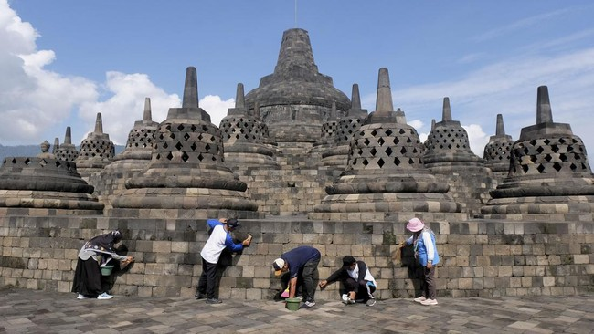
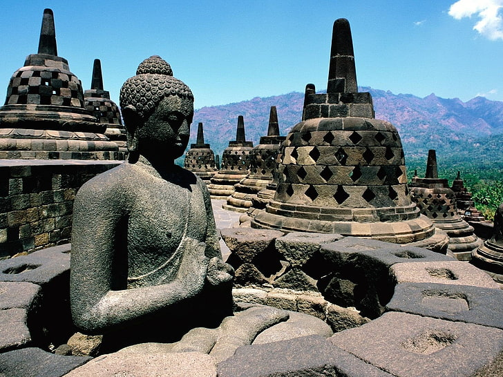
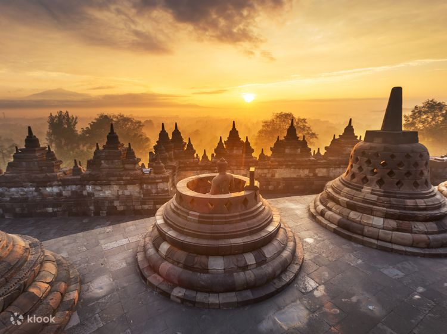
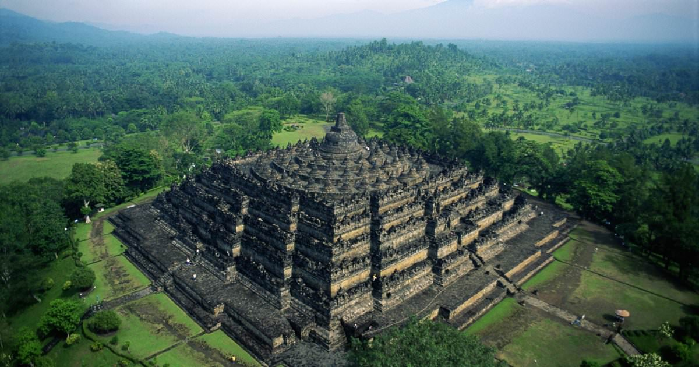
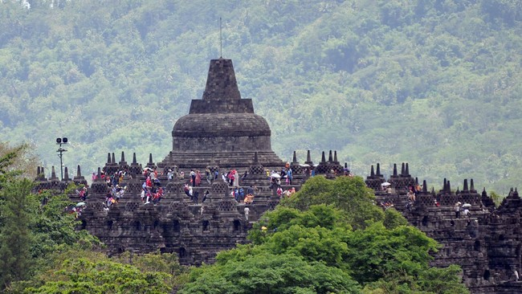
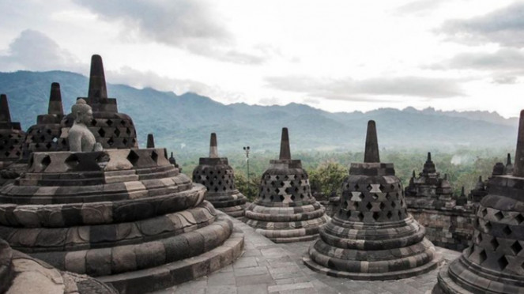
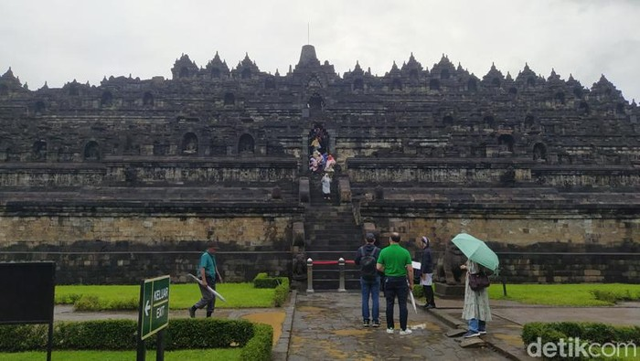

<!DOCTYPE html>
<html>
    <head>
        <meta charset="UTF-8">
        <meta http-equiv="X-UA-Compartible" content="IE-edge">
        <meta name="viewport" content="width-device-width, initial-scale-1.0">
        <link rel="stylesheet" type="text/css" href="style.css">
        <link rel="stylesheet" href="fontawesome/css/all.css">
        <title>Borobudur Tour</title>
        <link rel="preconnect" href="https://fonts.googleapis.com">
        <link rel="preconnect" href="https://fonts.gstatic.com" crossorigin>
        <link href="https://fonts.googleapis.com/css2?family=Poppins:ital,wght@0,100;0,200;0,300;0,400;0,500;0,600;0,700;0,800;0,900;1,100;1,200;1,300;1,400;1,500;1,600;1,700;1,800;1,900&display=swap" rel="stylesheet">
    </head>
</html>
<body>
   <nav>
    <input type="checkbox" id="check">
    <label for="check" class="checkbtn">
        <i class="fa-solid fa-gopuram"></i>
    </label>
    <label class="logo">Borobudur</label>
    <ul>
        <li class="active"><a href="#Home">Home</a></li>
        <li><a href="#sejarah">Sejarah</a></li>
        <li><a href="#galeri">Galeri</a></li>
        <li><a href="#tuju">Lokasi</a></li>
    </ul>
    </label>
   </nav>
   <section id="Home" class="Home">
    <section class="hero" id="home">
    <main class="Content">
        <h1>BOROBUDUR</h1>
        <h1>TOUR</h1>
        <br>
        <p>Explore Beautiful Destination Arround The World</p>
    </main>
    </section>
   </section>
   <section id="sejarah" class="sejarah">
   <div class="sejarah">
    <br>
    <h1><i class='fas fa-lightbulb'></i> Candi Borobudur</h1>
    <br>
    <p>Candi Borobudur adalah sebuah candi Buddha yang terletak di Borobudur, Magelang, Jawa Tengah, Indonesia.  Candi ini terletak kurang lebih 100 km di sebelah barat daya Semarang, 86 km di sebelah barat Surakarta, dan 40 km di sebelah barat laut Yogyakarta. Candi dengan banyak stupa ini didirikan oleh para penganut agama Buddha Mahayana sekitar tahun 800-an Masehi pada masa pemerintahan wangsa Syailendra. Borobudur adalah candi atau kuil Buddha terbesar di dunia, sekaligus salah satu monumen Buddha terbesar di dunia.</p>
    <br>
    
   </div>
</section>
   <div class="Sejarah">
    <br>
    <section id="sejarah">
        <h1>Sejarah</h1>
    <br>
    <p style="text-align: justify;">Dinasti Sailendra membangun peninggalan Budha terbesar di dunia antara 780-840 Masehi. Dinasti Sailendra merupakan dinasti yang berkuasa pada masa itu. Peninggalan ini dibangun sebagai tempat pemujaan Budha dan tempat ziarah. Tempat ini berisi petunjuk agar manusia menjauhkan diri dari nafsu dunia dan menuju pencerahan dan kebijaksanaan menurut Buddha. Peninggalan ini ditemukan oleh Pasukan Inggris pada tahun 1814 dibawah pimpinan Sir Thomas Stanford Raffles. Area candi berhasil dibersihkan seluruhnya pada tahun 1835.</p>
    <p>Borobudur dibangun dengan gaya Mandala yang mencerminkan alam semesta dalam kepercayaan Buddha. Strukturbangunan ini berbentuk kotak dengan empat pintu masuk dan titik pusat berbentuk lingkaran. Jika dilihatdari luar hingga ke dalam terbagi menjadi dua bagian yaitu alam dunia yang terbagi menjadi tiga zona dibagian luar, dan alam Nirwana di bagian pusat.</p>
    <br>
    <h3>Zona 1: Kamadhatu</h3>
    <br>
    <p>alam dunia yang terlihat dan sedang dialami oleh manusia sekarang.
    Kamadhatu terdiri dari 160 relief yang menjelaskan Karmawibhangga Sutra, yaitu hukum sebab akibat.Menggambarkan mengenai sifat dan nafsu manusia, seperti merampok, membunuh, memperkosa, penyiksaan, danfitnah.
    Tudung penutup pada bagian dasar telah dibuka secara permanen agar pengunjung dapat melihat relief yang   tersembunyi di bagian bawah. Koleksi foto seluruh 160 foto relief dapat dilihat di Museum Candi Borobudur yang terdapat di Borobudur Archaeological Park.</p>
    <br>
    <h3>Zona 2: Rupadhatu</h3>
    <br>
    <p>alam peralihan, dimana manusia telah dibebaskan dari urusan dunia.
    Rapadhatu terdiri dari galeri ukiran relief batu dan patung buddha. Secara keseluruhan ada 328 patung Buddha yang juga memiliki hiasan relief pada ukirannya.</p>
    <p>Menurut manuskrip Sansekerta pada bagian ini terdiri dari 1300 relief yang berupa Gandhawyuha,Lalitawistara, Jataka dan Awadana. Seluruhnya membentang sejauh 2,5 km dengan 1212 panel.</p>
    <br>
    <h3>Zona 3: Arupadhatu</h3>
    <br>
    <p>alam tertinggi, rumah Tuhan.
    Tiga serambi berbentuk lingkaran mengarah ke kubah di bagian pusat atau stupa yang menggambarkan kebangkitan dari dunia. Pada bagian ini tidak ada ornamen maupun hiasan, yang berarti menggambarkan kemurnian tertinggi.
    Serambi pada bagian ini terdiri dari stupa berbentuk lingkaran yang berlubang, lonceng terbalik, berisipatung Buddha yang mengarah ke bagian luar candi. Terdapat 72 stupa secara keseluruhan. Stupa terbesar yang berada di tengah tidak setinggi versi aslinya yang memiliki tinggi 42m diatas tanah dengan diameter 9.9m.Berbeda dengan stupa yang mengelilinginya, stupa pusat kosong dan menimbulkan perdebatan bahwa sebenarnya terdapat isi namun juga ada yang berpendapat bahwa stupa tersebut memang kosong.</p>
    <p>Relief</p>
    <p>Secara kesulurhan terdapat 504 Buddha dengan sikap meditasi dan enam posisi tangan yang berbeda di sepanjang candi.</p>
    <p>Koridor Candi</p>
    <p>Selama restorasi pada awal abad ke 20, ditemukan dua candi yang lebih kecil di sekitar Borobudur, yaitu Candi Pawon dan Candi Mendut yang segaris dengan Candi Borobudur. Candi Pawon berada 1.15 km dari Borobudur, sementara Candi Mendut berada 3 km dari Candi Borobudur. Terdapat kepercayaan bahwa ada hubungan keagamaan antara ketiga candi tersebut namun masih belum diketahui secara pasti proses ritualnya.</p>
    <p>Ketiga candi membentuk rute untuk Festival Hari Waisak yag digelar tiap tahun saat bulan purnama pada Bulan April atau Mei. Festival tersebut sebagai peringatan atas lahir dan meninggalnya, serta pencerahan yang diberikan oleh Buddha Gautama.</p>
    <br>
   </div>
    </section>
    
<!-- ======= My Portfolio Section ======= -->
    <section id="galeri" class="portfolio">
      <div class="container">
        <h1>Galeri</h1> <br>

        <div class="gambar">

          <div class="col-lg-4 col-md-6 portfolio-item filter-app">
            <div class="portfolio-img"></div>
          </div>

          <div class="col-lg-4 col-md-6 portfolio-item filter-web">
            <div class="portfolio-img"></div>
          </div>

          <div class="col-lg-4 col-md-6 portfolio-item filter-card">
            <div class="portfolio-img"></div>
          </div>

          <div class="col-lg-4 col-md-6 portfolio-item filter-web">
            <div class="portfolio-img"></div>
          </div>

          <div class="col-lg-4 col-md-6 portfolio-item filter-app">
            <div class="portfolio-img"></div>
          </div>

          <div class="col-lg-4 col-md-6 portfolio-item filter-card">
            <div class="portfolio-img"></div>
          </div>

          <div class="col-lg-4 col-md-6 portfolio-item filter-card">
            <div class="portfolio-img"></div>
          </div>

          <div class="col-lg-4 col-md-6 portfolio-item filter-web">
            <div class="portfolio-img"></div>
          </div>

        </div>

      </div>
    </section>
<section id="lokasi">
    <h1>Lokasi</h1> <br>
    <div class="lokasi">
    <iframe src="https://www.google.com/maps/embed?pb=!1m18!1m12!1m3!1d3954.6973690165973!2d110.20117637400568!3d-7.6078737924072195!2m3!1f0!2f0!3f0!3m2!1i1024!2i768!4f13.1!3m3!1m2!1s0x2e7a8cf009a7d697%3A0xdd34334744dc3cb!2sCandi%20Borobudur!5e0!3m2!1sid!2sid!4v1720775487554!5m2!1sid!2sid" width="600" height="450" style="border:0;" allowfullscreen="" loading="lazy" referrerpolicy="no-referrer-when-downgrade"></iframe>
    </div>
</section>
    
</body>